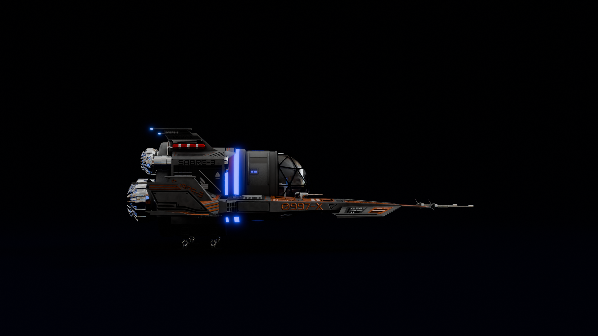
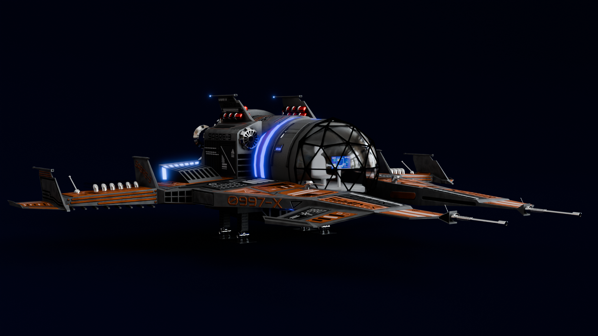
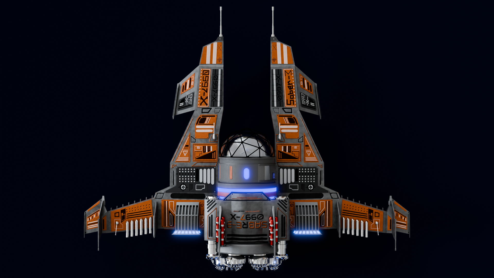
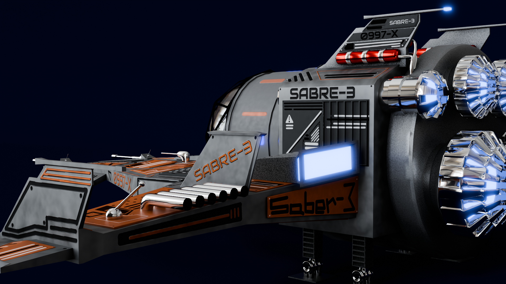

My Blender Portfolio
Spaceship
This ultra high polygon spaceship was made in Blender 4.3. It has numerous, painted texture maps which are modified in Blender's Shader Node Editor.




Procedural Planets
These planets (and their backrounds) are made using procedural textures and shaders. No image textures were used, making it unique, modifiable, and a special bit of my world.If you don't understand 3D texturing, here is it more simply: The shaders(fancy word for materials) are made using the combination of computer generated patterns, colors, and effects, not by taking a picture of a planet and wrapping it around the model.